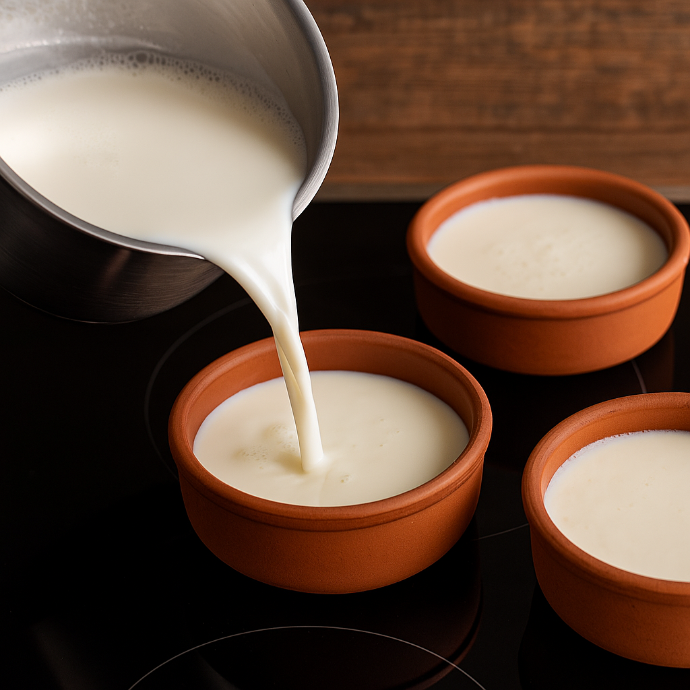

Fırın Sütlaç
Süre: Hazırlık 10 dk + Pişirme 15-20 dk = Toplam 30 dk
- Malzemeler:
- 1 litre süt
- 1 su bardağı pirinç
- 1 su bardağı toz şeker
- 1 paket vanilin
- 2 yemek kaşığı nişasta
- 1 su bardağı su (nişasta için)

Yapılışı:
- Pirinci yıkayıp 1 bardak suyla kısıkta suyunu çekene kadar haşlayın
- Sütü ekleyin; taşırmadan ara sıra karıştırarak 10–12 dk kaynatın.
- Şekeri ekleyin; 5 dk daha pişirin. Nişastayı az suyla açıp ekleyin; 2–3 dk koyulaşana kadar karıştırın. Vanilin ekleyin.
- Karışımı ısıya dayanıklı kaselere paylaştırın.
- Tepsiye kaseleri dizip tepsiye yarıya kadar su ekleyin (benmari). 220 °C üst rezistans/grill açık fırında üstleri hafif kızarana kadar 10–12 dk pişirin.
- Ilıyınca buzdolabında dinlendirip tarçınla servis edin.
Afiyet olsun! 🍽️